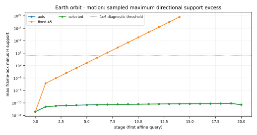
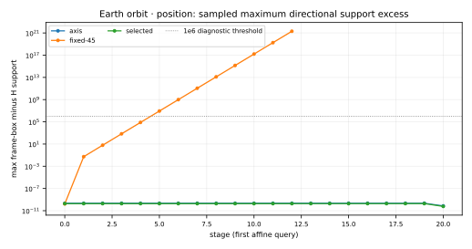
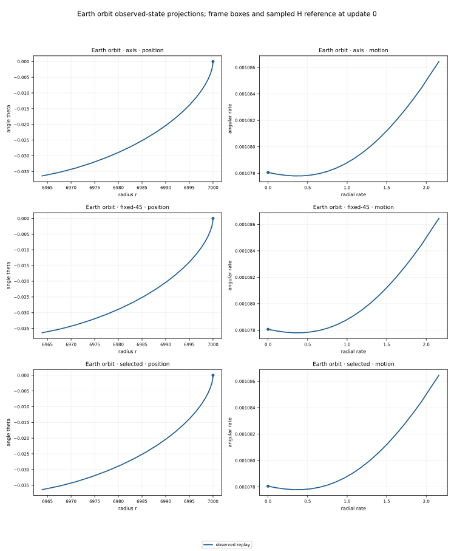
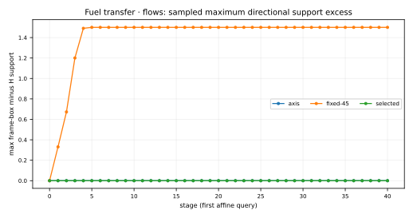
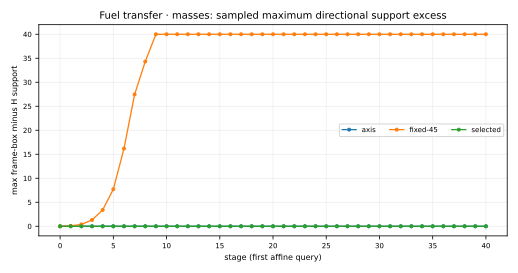
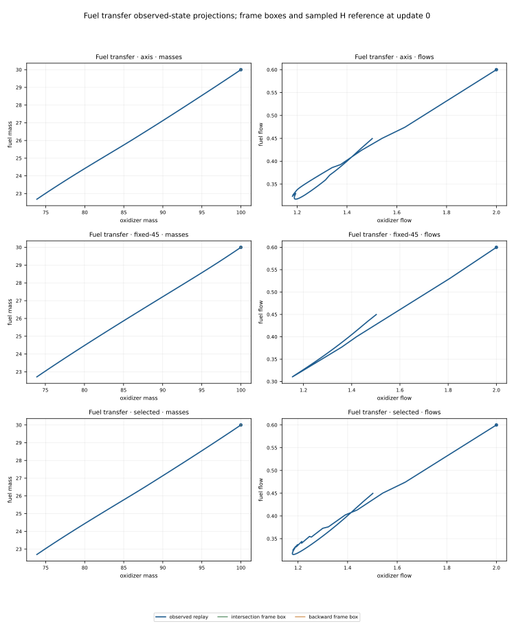
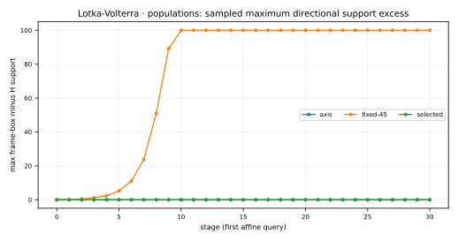
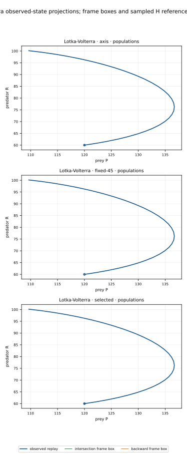

Saved A/B campaign at source commit 3c3c694331497f2f3e991dbe7c1a6e328052af56. Two paired comparisons run one excluded warmup and five alternating measured repetitions on the three admitted observed-state tasks. Timings are descriptive process observations; no speed winner is claimed.
Scope. Sampled 2D directional support excess is a diagnostic, not a uniform error bound or inclusion certificate. The frame-coordinate cover and the certified frame-direction margins are the cover checks. Unsupported and failed routes are retained.
| Pair | Task | Frame | Measured | Complete | Wall median (s) | Wall range (s) | CPU median (s) | Max RSS (KiB) | Objective median |
|---|---|---|---|---|---|---|---|---|---|
| axis-vs-rotated | Earth orbit | axis | 5 | 5 | 53.6736 | 52.6805–74.8985 | 44.2775 | 309328 | 65.2297 |
| axis-vs-rotated | Earth orbit | fixed-45 | 5 | 5 | 40.1673 | 39.8525–40.4823 | 26.6578 | 317044 | 65.2297 |
| axis-vs-rotated | Fuel transfer | axis | 5 | 5 | 129.685 | 127.878–137.771 | 100.823 | 432228 | 0.00384887 |
| axis-vs-rotated | Fuel transfer | fixed-45 | 5 | 5 | 179.519 | 151.704–239.154 | 121.275 | 453708 | 0.00383436 |
| axis-vs-rotated | Lotka–Volterra | axis | 5 | 5 | 39.5691 | 32.6044–54.169 | 24.167 | 287924 | 0.0920672 |
| axis-vs-rotated | Lotka–Volterra | fixed-45 | 5 | 5 | 39.9731 | 38.1682–119.245 | 27.8018 | 296936 | 0.0920636 |
| axis-vs-selected | Earth orbit | axis | 5 | 5 | 102.762 | 100.358–112.34 | 86.3705 | 308264 | 65.2297 |
| axis-vs-selected | Earth orbit | selected | 5 | 5 | 95.1099 | 90.7583–96.9317 | 68.6878 | 333320 | 65.2297 |
| axis-vs-selected | Fuel transfer | axis | 5 | 5 | 132.55 | 129.568–142.173 | 102.797 | 431972 | 0.00384887 |
| axis-vs-selected | Fuel transfer | selected | 5 | 5 | 179.496 | 178.503–183.288 | 130.723 | 483004 | 0.00385228 |
| axis-vs-selected | Lotka–Volterra | axis | 5 | 5 | 31.251 | 30.8674–32.642 | 21.7327 | 278460 | 0.0920672 |
| axis-vs-selected | Lotka–Volterra | selected | 5 | 5 | 44.1926 | 43.5247–55.6781 | 29.4174 | 293876 | 0.0920718 |
32 directions per 2D projection at the first query, all stages and roles. Positive values mean the parallelotope projection is looser than the exported full-state H reference.
| Pair | Task | Frame | Plane | Rows | Max excess | Median row max | Frame checks |
|---|---|---|---|---|---|---|---|
| axis-vs-rotated | Earth orbit | axis | motion | 63 | 6.439294e-14 | 7.327472e-15 | 63/63 |
| axis-vs-rotated | Earth orbit | axis | position | 63 | 2.219167e-10 | 7.094059e-11 | 63/63 |
| axis-vs-rotated | Earth orbit | fixed-45 | motion | 45 | 3.550346e+21 | 1.560917e+07 | 45/45 |
| axis-vs-rotated | Earth orbit | fixed-45 | position | 39 | 2.015392e+21 | 9.910845e+08 | 39/39 |
| axis-vs-rotated | Fuel transfer | axis | flows | 123 | 3.552714e-14 | 1.598721e-14 | 123/123 |
| axis-vs-rotated | Fuel transfer | axis | masses | 123 | 1.250555e-12 | 5.258016e-13 | 123/123 |
| axis-vs-rotated | Fuel transfer | fixed-45 | flows | 123 | 1.5 | 1.5 | 123/123 |
| axis-vs-rotated | Fuel transfer | fixed-45 | masses | 123 | 40 | 40 | 123/123 |
| axis-vs-rotated | Lotka–Volterra | axis | populations | 93 | 1.080025e-12 | 9.094947e-13 | 93/93 |
| axis-vs-rotated | Lotka–Volterra | fixed-45 | populations | 93 | 100 | 100 | 93/93 |
| axis-vs-selected | Earth orbit | axis | motion | 63 | 6.439294e-14 | 7.327472e-15 | 63/63 |
| axis-vs-selected | Earth orbit | axis | position | 63 | 2.219167e-10 | 7.094059e-11 | 63/63 |
| axis-vs-selected | Earth orbit | selected | motion | 63 | 5.551115e-14 | 5.745404e-15 | 63/63 |
| axis-vs-selected | Earth orbit | selected | position | 63 | 1.919034e-10 | 5.820766e-11 | 63/63 |
| axis-vs-selected | Fuel transfer | axis | flows | 123 | 3.552714e-14 | 1.598721e-14 | 123/123 |
| axis-vs-selected | Fuel transfer | axis | masses | 123 | 1.250555e-12 | 5.258016e-13 | 123/123 |
| axis-vs-selected | Fuel transfer | selected | flows | 123 | 3.552714e-14 | 1.465494e-14 | 123/123 |
| axis-vs-selected | Fuel transfer | selected | masses | 123 | 1.250555e-12 | 5.115908e-13 | 123/123 |
| axis-vs-selected | Lotka–Volterra | axis | populations | 93 | 1.080025e-12 | 9.094947e-13 | 93/93 |
| axis-vs-selected | Lotka–Volterra | selected | populations | 93 | 1.080025e-12 | 4.263256e-13 | 93/93 |
Framed memberships checked: 5580 / 5580. Independent geometry rows passed: 5580 / 5580. Independent receipts accepted: 60 / 60 measured attempts.
The support-selected rule retained the axis frame, so axis vs selected is a numerical near-control rather than a second nonaxis treatment. The fixed 45 degree profile is the only realized nonaxis orientation; on Earth orbit it exported frame bounds above the 1e6 diagnostic threshold in five attempts. Those outcomes are retained in the tables and records above, not treated as successful nonaxis samples. Sampled excess is a diagnostic, not a uniform error bound, and the timings claim no speed winner.
Selected-frame choices: {"selected axis": 1395}. A selected count of selected axis equal to the selected membership count means the support-selected controller retained the axis frame; the axis-vs-selected pair is then a numerical near-control, not a second nonaxis treatment. The fixed 45° profile is the only realized nonaxis orientation.
| Pair | Task | Frame | Max absolute frame bound | Blow-up attempts (>1e6) |
|---|---|---|---|---|
| axis-vs-rotated | Earth orbit | axis | 7205.06 | 0 |
| axis-vs-rotated | Earth orbit | fixed-45 | 3.699669e+37 | 5 |
| axis-vs-rotated | Fuel transfer | axis | 100 | 0 |
| axis-vs-rotated | Fuel transfer | fixed-45 | 110.309 | 0 |
| axis-vs-rotated | Lotka–Volterra | axis | 136.212 | 0 |
| axis-vs-rotated | Lotka–Volterra | fixed-45 | 247.487 | 0 |
| axis-vs-selected | Earth orbit | axis | 7205.06 | 0 |
| axis-vs-selected | Earth orbit | selected | 7205.06 | 0 |
| axis-vs-selected | Fuel transfer | axis | 100 | 0 |
| axis-vs-selected | Fuel transfer | selected | 100 | 0 |
| axis-vs-selected | Lotka–Volterra | axis | 136.212 | 0 |
| axis-vs-selected | Lotka–Volterra | selected | 136.212 | 0 |
Each figure is drawn from the saved observed-state replay of the first affine query. Solid lines are frame boxes; dashed lines are sampled supports of the exported H set.

earth-orbit-motion-support-excess
earth-orbit-position-support-excess
earth-orbit-projections
syn-nl-fuel-01-flows-support-excess
syn-nl-fuel-01-masses-support-excess
syn-nl-fuel-01-projections
syn-nl-lv-01-populations-support-excess
syn-nl-lv-01-projections